The Web
Categorie
Full Stack Development
Profiel Full Stack Web Developer
Naast ontwikkelen van Websites, Apps en webApps beheerst de Full Stack Web Developer ook de kennis en vaardigheid om OTAP omgevingen op te zetten, te deployen en beheren. Kernbegrippen zijn daarbij DevOps, Agile en CI/CD.
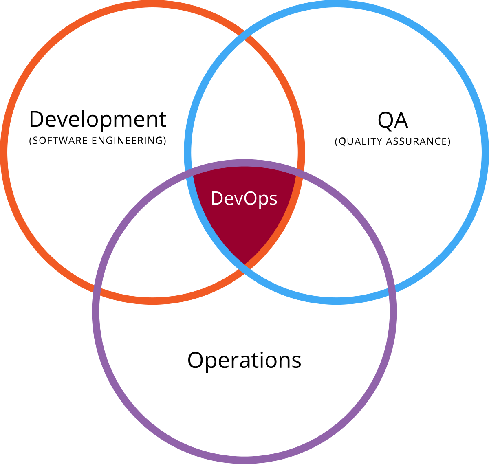
DevOps:
Cultuurverandering en term voor het software proces van Ontwikkelen, Testen, Acceptatie en Productie (OTAP) waarbij de Productie nauw verbonden is met samenwerking naar tussen ontwikkelaars.
Zodoende zijn er niet meer de van oudsher bestaande scheidslijnen tussen coding van functionaliteit (de software tijgers) versus IT'ers (de techneuten) die de machines 'op stoom' houden. Het geheel is nu één team dat gezamenlijk het product managed.
→ zie: Wikipedia DevOps
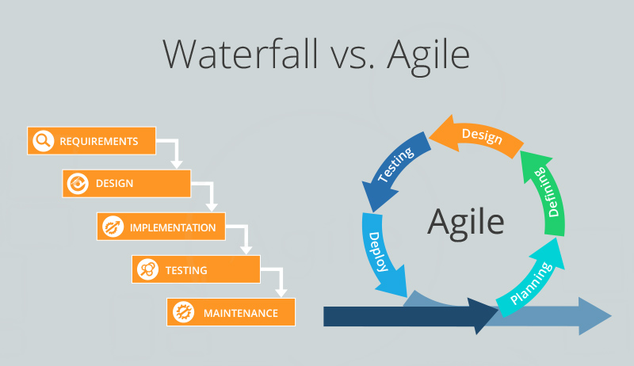
Agile is mindset met drijvende principes:
- Klanttevredenheid door vroege en continue levering van waardevolle software
- Verwelkom veranderende eisen, zelfs in de late ontwikkeling
- Lever werkende software regelmatig (weken in plaats van maanden)
- Nauwe, dagelijkse samenwerking tussen 'de business' en ontwikkelaars
- Projecten zijn gebouwd rond gemotiveerde individuen, die vertrouwd moeten worden
- Face-to-face gesprek is de beste vorm van communicatie (co-locatie)
- Werkende software is de primaire maatstaf voor vooruitgang
- Duurzame ontwikkeling, in staat om een constant tempo te handhaven
- Continue aandacht voor technische excellence en goed ontwerp
- Eenvoud, de kunst van het maximaliseren van de hoeveelheid niet gedaan werk is essentieel
- De beste architecturen, vereisten en ontwerpen komen voort uit zelforganiserende teams
- Regelmatig denkt het team na over effectiever worden en past zich dienovereenkomstig aan
→ zie: Wikipedia Agile
 CI/CD is methode van aanpak:
CI/CD is methode van aanpak:
Continue integratie en continue delivery want vanuit functionaliteit zijn er dagelijks wijzingen en verbeteringen die aan gebruikers moet worden geleverd met OTAP omgevingen die niet meer statische entiteiten zijn zoals 'vroeger', maar dynamisch, schaalbaar en zó mobiel dat ze in 'no time' zich over de hele wereld kunnen verspreiden.
→ zie: Wikipedia CI
→ zie: Wikipedia CD
Taken
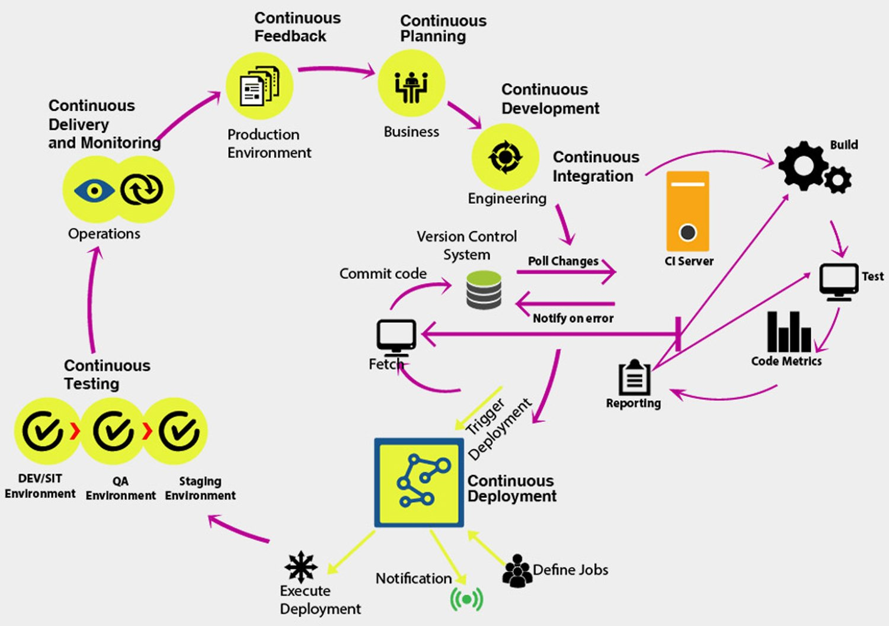
Beheersing skill set en taken Back End Web Developer Database wordt verondersteld. Voor Full Stack Web Developer komt erbij de volgende reeks taken, die voor het lees en leerproces chronologisch zijn genummerd waarbij het een volgt uit het ander.
1. Machine Management
2. Provisioning
3. Resource Management
4. Containerization
5. Job Scheduling
6. Container Orchestration
7. Application Orchestration
De Full Stack Web Developer beheerst alle onderstaande tools om taken te kunnen verrichten.
1. Machine Management
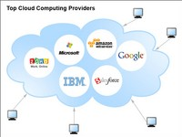 Met machine management wordt bedoeld het identifiseren, selecteren en realiseren van "computers" waarop tooling en software functioneert. Met computers wordt bedoeld bare metal oftewel fysieke, dan wel virtuele apparatuur of servers.
Zoals eerder in deze guide bij OTAP omgevingen genoemd zijn er vele soorten van machines:
- Installatie van Virtual Machine zoals VirtualBox of VMware
- Installatie van dual boot met 2e of meer OS
- Dedicated computer inrichten (Pi4?) of ombouwen bestaande computer
- Cloud huren Virtual Machine bij Google GCP, AWS, Azure of Oracle
- Cloud huren via shared hosting met meerdere klanten op één server
- Cloud huren via Virtual Private Server als dedicated "eigen" machine
Aangezien voornoemde varianten van machines en hun management in voorgaande Web Developer profielen inhoudelijk zijn behandeld volgt hier verder geen verdere uitdieping en wordt verwezen naar betreffende passages alwaar uiteenzetting plaatsvindt.
Product van Machine Management is een overzicht van on premises geinstalleerde, dan wel en of cloud machines / servers mét dus alle LAN of WAN (lees: local netwerk of internet) IP adressen daarvan.
Deze IP adressen zijn nodig voor verder uitvoeren van provisioning en zijn de basis voor werkzaamheden aldaar. Immers, die machines (nodes) zijn de target voor verdere installatie!
2. Provisioning
Provisioning is een reeks acties om een server met geschikte systemen, gegevens en software voor te bereiden en gereed te maken voor netwerkgebruik.
→ zie: Wikipedia Provisioning
Typische taken bij het inrichten van een server zijn: selecteer een server uit een pool van beschikbare servers (zie bij 1 hiervoor), laad de juiste software zoals besturingssysteem, apparaatstuurprogramma's, middleware en applicaties, pas het systeem en de software op de juiste manier aan en configureer deze om een boot te maken of te wijzigen image voor deze server en wijzig vervolgens de parameters, zoals het IP-adres, de IP-gateway om bijbehorende netwerk- en opslagbronnen te vinden om het systeem te controleren.
- Voorwoord Vagrant & Ansible
-
In de praktijk blijkt dat provisioning van nieuwe OTAP omgevingen geschiedt in twéé stappen:
- Vagrant deployed mbv IP adressen uit (1) de nieuwe omgevingen
- Ansible configureert de nieuwe omgevingenDit voorwoord is er speciaal op gericht om te wijzen op het feit dat Vagrant tijdens deployment van nieuwe omgeving óók de configuratie daarvan kan uitvoeren. En bijna alle tutorials laten dat dan ook zien. Echter, de toeschouwer kan daardoor in verwarring raken over wat dan nog het nut is van Ansible.
Na éénmalige Vagrant deployment van omgevingen is Ansible een prima long term support configuratie management, en meer, tool van omgevingen. Dat is de reden dat in de praktijk blijkt dat Vagrant wordt gebruikt voor deployment om daarna Ansible te starten voor configuratie van die omgeving.
Vagrant
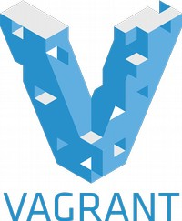
Vagrant is free open source software voor het bouwen en onderhouden van draagbare virtuele software ontwikkelomgevingen, voor VirtualBox, KVM, Hyper-V, Docker containers, VMware en AWS.
→ zie: Wikipedia Vagrant
→ zie: Website Vagrant download & get started
- Kenmerken
-
Vagrant maakt gebruik van een declaratief configuratiebestand dat een geheel systeem beschrijft. OS, pakketten, besturingssysteemconfiguratie, gebruikers en meer. Machine- en softwarevereisten worden geschreven in een bestand met de naam "Vagrantfile" om de nodige stappen uit te voeren om een omgeving aan te maken.
Vagrantfile kan op verschilende manieren worden ingezet, bijvoorbeeld:
- Push: vanuit master worden slave target machines ingericht, of;
- Pull: Vagrantfile kopieeren naar target machines om zo daar omgeving te deployen→ zie: YouTube Videotorial Vagrant
Ansible
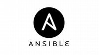
Ansible is een (community free) open source tool voor Application deployment, Configuratie management, Security, Compliancy, Provisioning, Orchestration.
→ zie: Wikipedia Ansible
→ zie: Website Ansible download & get started
→ zie: Wikipedia YAML
→ zie: Website YAML download & get started
- Kenmerken
-
- Playbook is opgave van uit te voeren tasks.
- Inventory is opgave van target nodes
- Modules zijn programma's die tasks uitvoeren
- Roles zijn gegroepeerde tasks naar functionaliteit
- YAML is in Playbook te gebruiken taal→ zie: YouTube Videotorial Ansible
→ zie: YouTube Videotorial YAMLBijgaande videotorial is provisioning compleet uitgewerkt
→ zie: YouTube Videotorial Vagrant met VirtualBox & Ansible
- Meerdere configuratie tools
-
Naast Ansible zijn er ook andere configuratie tools. Deze doen ongeveer allemaal hetzelfde maar dan net even anders. Men kan zich zelf verdiepen in welke de voorkeur geniet. Onderstaande tutorial maakt vergelijking tussen tools Chef, Puppet, Ansible en Saltstack.
3. Resource Management
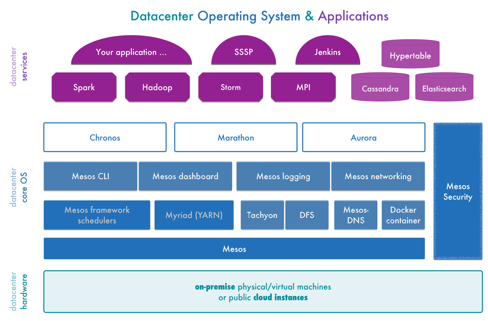
Bij Resource Management wordt in dit verband gesproken als DataCentrum OS (DC/OS) waarbij verschillende tools, bijvoorbeeld bij onderstaand verder uitgewerkte tool Apache Mesos, gezamenlijk alle beschikbare nodes beheerd.
→ zie: Wikipedia DataCentrum OS
Geautomatiseerd beheer geschiedt op bestaande nodes zoals boven bij (1) beschreven en kunnen zijn on premises geinstalleerde, dan wel en of cloud machines en servers naar gelang gebruik in productie (de Ops uit DevOps), met monitoring van need to up or down scaling.
Tevens kan geautomatiseerd met een vooraf aangegane account bij Cloud provider nog niet gealloceerde nodes dynamisch allocated en provisioned (deploy, configure), alsook gekilled worden.
- DC/OS Mesospehere
-
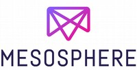 DC/OS Mesosphere is een free open source gedistribueerd operating systeem gebaseerd op Apache Mesos. DC/OS Mesospehere categoriseert componenten als in gebruikersruimte of kernelruimte. De kernelruimte omvat de Mesos master en agents, terwijl de gebruikersruimte verschillende systeemcomponenten van het DC/OS omvat.
→ zie: Website DC/OS download & get startedDeze componenten omvatten onder andere Admin Router, een interne load balancer, Cosmos, een API-service voor interne verpakkingen, Exposant, een Java supervisorsysteem voor ZooKeeper, Marathon, een Apache Mesos framework voor container orkestratie, Mesos-DNS, een interne DNS-service.
4. Containerization
 Een container is een standaardeenheid van software die code en al zijn afhankelijkheden verpakt, zodat de toepassing snel en betrouwbaar van de ene computeromgeving naar de andere wordt uitgevoerd. Gecontaineriseerde software zal altijd hetzelfde draaien, ongeacht de infrastructuur. Containers isoleren software van zijn omgeving en zorgen ervoor dat het uniform werkt, ongeacht welke OTAP stage.
Een container is een standaardeenheid van software die code en al zijn afhankelijkheden verpakt, zodat de toepassing snel en betrouwbaar van de ene computeromgeving naar de andere wordt uitgevoerd. Gecontaineriseerde software zal altijd hetzelfde draaien, ongeacht de infrastructuur. Containers isoleren software van zijn omgeving en zorgen ervoor dat het uniform werkt, ongeacht welke OTAP stage.
→ zie: Wikipedia Containerization
- Kenmerken
-
De industrie standaard voor gebruik van containers is Docker. Hét host operating systeem is altijd Linux. Dat betekent dat Docker Engine op Windows of macOS alleen functioneert in een Virtual Machine zoals VirtualBox met daarin host OS Linux. Of bij Windows10 en Windows Server 2019 in het Windows Subsystem for Linux.
→ zie: Wikipedia WSL
Docker
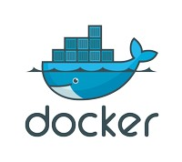
Docker is (community free) open source software en een set van Platform as a Service producten (PaaS) die op OS niveau virtualisatie gebruiken om software te leveren in pakketten die containers worden genoemd. Containers zijn geïsoleerd van elkaar en bundelen hun eigen software, bibliotheken en configuratiebestanden; ze kunnen met elkaar communiceren via goed gedefinieerde kanalen. Docker maakt gebruik van host OS en is dus lichter dan virtuele machines waarbij elke VM een eigen OS heeft.
→ zie: Wikipedia Docker
→ zie: Website Docker download & get started
- Kenmerken
-
Docker gebruikt de resource isolatiefuncties van de Linux kernel zoals cgroups en kernel namespaces en een bestandssysteem dat geschikt is voor unificatie zoals OverlayFS om containers binnen een enkele Linux instantie te laten draaien, waarbij de overhead van het starten en onderhouden van virtuele machines wordt voorkomen.
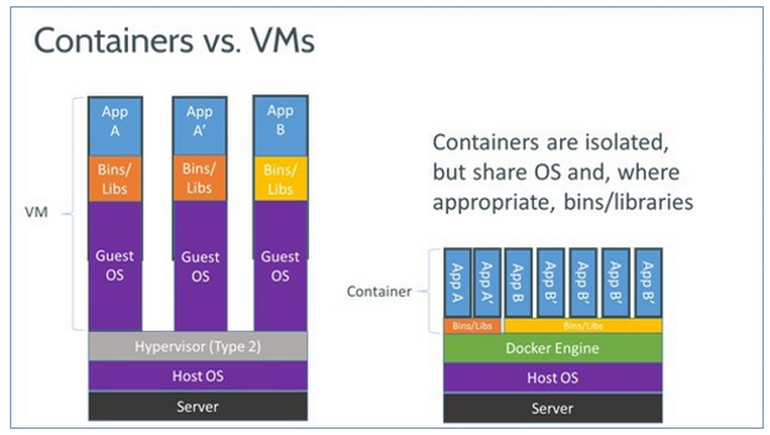 Omdat Docker containers lichtgewicht zijn, kan een enkele server of virtuele machine meerdere containers tegelijkertijd uitvoeren. Bij een analyse uit 2018 bleek dat een typische Docker use case betrekking heeft op acht containers per host, maar dat een kwart van de geanalyseerde organisaties 18 of meer per host uitvoert.Docker en Vagrant (VM VirtualBox als provider) concurreren niet rechtstreeks met elkaar. Ze kunnen samen worden gebruikt. En zijn dat vaak ook door de Vagrant Docker Provisioner te gebruiken om Docker automatisch te installeren, Docker containers te Pullen en bepaalde containers te configureren voor opstarten.
→ zie: YouTube Videotorial Docker
5. Job Scheduling
Een Job Scheduler is een computertoepassing voor het beheren en uitvoeren van taken zonder toezicht op de achtergrond. Synoniemen zijn batchsystemen, distributed resource management system (DRMS), distributed resource manager (DRM) en, tegenwoordig, meestal, workload automation (WLA). De gegevensstructuur van uit te voeren taken wordt de job queue genoemd.
→ zie: Wikipedia Job Scheduling
Cron
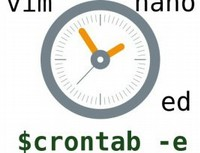
Een Cronjob of crontab is een Linux commando dat een programma of script op een ingesteld tijdstip uitvoert. Cronjobs worden gebruikt in Unix achtige systemen als Linux, BSD en Apple Macintosh. Het woord 'cron' is afkomstig van het Engelse woord chronograph, dat een soort stopwatch is. Later is hier job (taak) aan toegevoegd. Een cronjob die een systeem service draait wordt een daemon genoemd. Dit zijn meestal servertoepassingen.
→ zie: Wikipedia Cron
- Kenmerken
-
Vaak worden cronjobs gebruikt voor het ophalen van de email, het verzenden van email of het controleren op updates. Als een cronjob op een (web)server wordt gebruikt, is dat vaak om een backup van een database te maken, een PHP of Perl script aan te roepen of een servercommando uit te voeren. De meeste webhosters bieden cronjobs aan in een control panel zoals Plesk of DirectAdmin.
- Meerdere Job Schedulers
-
Cronjob is zeg maar zoals het begonnen is. Anno heden zijn er vele tools die ook job scheduling bevatten, maar daarnaast nog veel meer doen en op grotere schaal, meestal op containerfarm en datacentre breed niveau. Zo is Kubernetes uitstekend geschikt voor Job Scheduling, maar gelet op het overall karakter daarvan wordt deze tool in volgende hoofdstuk opgenomen.
6. Container Orchestration
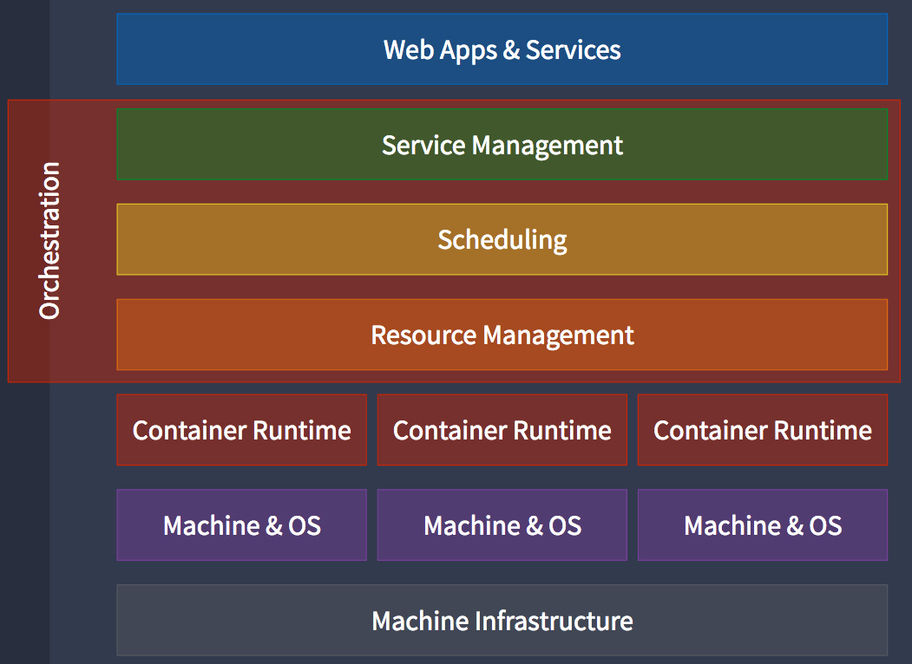 Van oudsher omvatte deployment allerlei bash-scripts met vele statements en schimmige workarounds. Het coördineren van dit alles deed een sysadmin en DBA.
Toen kwam Chef, Puppet, Ansible en continue integratie en implementatie (CI). Deze tools maakten het eenvoudig om tests en implementatie te standaardiseren. Belangrijk is dat deze tools, eenmaal op hun plaats, een DevOps team in staat stelt om het detail van wat er moet gebeuren te vergeten.
Op dezelfde manier stellen containers zoals Docker ons in staat om de omgeving te standaardiseren en de details van het onderliggende besturingssysteem en de hardware te abstraheren. Bij container orkestratie hoeft men niet na te denken over welke server een bepaalde container zal hosten of hoe die container zal worden gestart, gecontroleerd en gekilled.
Container orkestratie is major op dit moment. Hoewel het containerformaat zich grotendeels heeft uitgekristalliseerd (Docker), is het echte verschil (van tools) in het implementeren en beheren van die containers.
Kubernetes
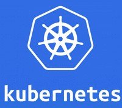
Kubernetes meestal gestileerd als k8s, is een free open source container orkestratiesysteem voor het automatiseren van applicatie implementatie, schaling en beheer over clusters van hosts. Het werkt met verschillende containerhulpmiddelen, waaronder Docker. Veel cloudservices bieden een op Kubernetes gebaseerd platform of infrastructuur als een service (PaaS of IaaS) waarop Kubernetes kan worden ingezet als een platformverschaffende service.
→ zie: Wikipedia Kubernetes
- Kenmerken
-
 Kubernetes definieert een set bouwstenen "primitives", die gezamenlijk mechanismen bieden die applicaties implementeren, onderhouden en schalen op basis van CPU, geheugen of custom metrics. Kubernetes is losjes gekoppeld en uitbreidbaar om aan verschillende workloads te voldoen.
Kubernetes definieert een set bouwstenen "primitives", die gezamenlijk mechanismen bieden die applicaties implementeren, onderhouden en schalen op basis van CPU, geheugen of custom metrics. Kubernetes is losjes gekoppeld en uitbreidbaar om aan verschillende workloads te voldoen.
Deze uitbreidbaarheid wordt grotendeels geleverd door de Kubernetes API, die wordt gebruikt door interne componenten en uitbreidingen en containers die op Kubernetes draaien. Het platform oefent controle uit over reken- en opslagbronnen door bronnen als objecten te definiëren, die vervolgens als zodanig kunnen worden beheerd.
Kubernetes wordt vaak gebruikt als een manier om een op microservice gebaseerde implementatie te hosten, omdat het en het bijbehorende ecosysteem van tools alle mogelijkheden bieden die nodig zijn om de belangrijkste problemen van elke microservice architectuur aan te pakken.
- Meerdere Container Orchestration tools
-
Naast Kubernetes zijn er ook andere configuratie tools zoals Docker Swarm, Marathon, Fleet, Lattice, ECS. Deze doen ongeveer allemaal hetzelfde maar dan anders. Men kan zich zelf verdiepen in welke de voorkeur geniet. Onderstaande tutorial maakt vergelijking tussen tools Kubernetes en Docker Swarm.
→ zie: YouTube Videotorial Vergelijk Kubernetes vs Docker Swarm
Nogal een big thing is OpenShift en ook geschikt voor Container Orchestration, maar gelet op het overall karakter daarvan wordt deze tool in volgende hoofdstuk opgenomen. Onderstaande tutorial maakt vergelijking tussen tools Kubernetes en OpenShift (RedHat, geen foss).
→ zie: YouTube Videotorial Vergelijk Kubernetes vs OpenShift
7. Application Orchestration
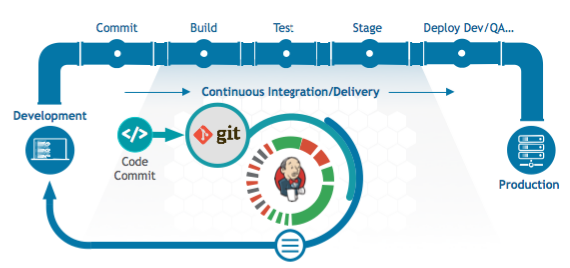 Zoals bovenaan deze pagina gezien bestaat een DevOps team uit ontwikkelaars, testers, acceptanten en productie leden. Dit team werkt op basis van Agile principes en hun aanpak is CI/CD. Team werkcyclus oftewel pipeline, wordt end-to-end ondersteund met reeks tools.
Application orchestration is de term van automatiseren van deze pipeline van eenvoudige of complexe systeemtaken op die normaal handmatig zouden worden uitgevoerd. Van elke tool hierna gepresenteerd is er ongetwijfeld een equivalent, edoch dit zijn veel gebruikte.